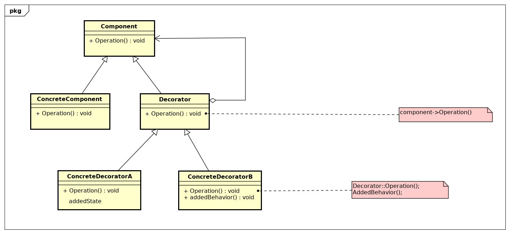

09 - Decorator
Descrição do padrão:
A intenção do padrão de projeto Decorator é dinamicamente, agregar responsabilidades adicionais a um objeto. Os Decorators fornecem uma alternativa flexível ao uso de subclasses para extensão de funcionalidades.
Descrição da UML do padrão de projeto Decorator.
- - define a interface para objetos que podem ter responsabilidades acrescentadas aos mesmos dinamicamente.
- - define um objeto para o qual responsabilidades adicionais podem ser atribuídas.
- - mantém uma referência para um objeto Component e define uma interface que segue a interface de Component.
- - acrescenta responsabilidades ao componente.
UML do padrão:
Descrição do exemplo do livro: